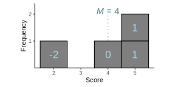
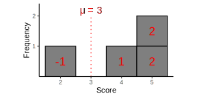

What is your current level of happiness?
\(\mu = 8\) hours
What is your current level of happiness?
\(\mu = 3\)
\(\text{Estimated } d = \dfrac{\text{mean difference}}{\text{sample standard deviation}} = \dfrac{M - \mu}{s}\)
\(\text{For class RT data, } d = \dfrac{322.59 - 284}{45.31} = 0.85\)
\(r^2 = \dfrac{SS_{treatment}}{SS_{total}}\)


\[\begin{align} r^2 = \dfrac{SS_{treatment}}{SS_{total}} &= \dfrac{SS_{total} - SS_{without \ treatment}}{SS_{total}} \\ &= \dfrac{10-6}{10} = 0.4 \end{align}\]
\(r^2 = \dfrac{t^2}{t^2 + df}\)
“Given the average reaction time for the population of \(\mu = 284 ms\), according to humanbenchmark.com, a two-tailed single-sample \(t\)-test suggests that BC1101 students have significantly different reaction times \((M = 322.59\); \(SD = 45.31)\) than the general population; \(t(22) =\) \(4.08\), \(p < .05\), \(d = 0.85\).”
\(t = \dfrac{M - \mu}{s_M}\)
\(\mu = M \pm t * s_M\)
“The parameter is an unknown constant and no probability statement concerning its value may be made.”1